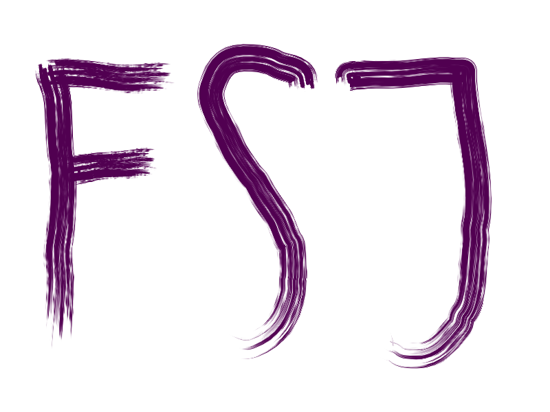

Mein Lebenslauf


Ich studiere derzeit Medieninformatik an der Hochschule Furtwangen. Aktuell (Stand 06.11.2020) befinde ich mich in meinem dritten Semester und somit im Praktikumssemester bei Schanze und Horn, eine digitale Medienagentur und Marke des Südkurier-Medienhauses. Der Studiengang Medieninformatik verbindet den technischen Bereich der Informatik und den kreativen Bereich der Medien, was ihn sehr abwechslungsreich gestaltet. Für mich ist diese Verbindung aus kreativen Anforderungen und technischem Verständnis sehr spannend und ich genieße den Studiengang seit der ersten Vorlesung. Mittlerweile bin ich auch in das Exzellenzprogramm der Fakultät Digitale Medien aufgenommen worden, was mir den Austausch mit einem Professor als Mentor und Exkursionen zu Firmen in der Umgebung und Einblicke in deren Arbeit ermöglicht.


Meine Ausbildung zum Medienkaufmann für Digital und Print habe ich beim Singener Wochenblatt in Singen am Hohentwiel absolviert. Ich habe dabei Einblicke in die Buchhaltung und Personalabteilung eines Unternehmens erhalten, konnte verschiedene Arbeiten in der Redaktion ausführen (z.B.: hier)
Anzeigen gestallten in der Technik Abteilung mit dem Layoutprogramm QuarkX. Und Zusteller koordinieren im Vertrieb. Jedoch die meiste Zeit habe ich im Anzeigenverkauf gearbeitet, in dem die Koordination zwischen Kunde, Technikabteilung und Buchhaltung gefragt ist. Auch die Mithilfe bei Sonderveranstaltungen sind teilweise in mein Aufgabenfeld gefallen. Den schulischen durfte ich in der David-Würth-Schule in Schwenningen abhalten. Meine Prüfung habe ich mit Auszeichnung(hier) bestanden.
Nach meinem Abitur habe ich ein Freiwilliges soziales Jahr zur Orientierung und als Leistung für die Gesellschaft absolviert. Während meines Sozialen Jahres habe ich zum ersten Mal einen geregelten und sehr terminierten Arbeitsalltag kennengelernt, da der Tag sich häufig streng nach Zeitlich begrenzten Terminen orientiert hat der sich nach den Patienten ausrichtete. Was jedoch das überwogen hat war vor allem das Arbeiten mit Menschen und die Verantwortung für das eigene Handeln, da im Gegensatz zur Schulzeit die eigenen Fehler sich nicht nur auf einen selbst zurück fallen sondern auch auf den Patienten der auf einen wartet und verlässt.

In meinem Abitur hatte ich Biologie und Sport als Wahlfächer, jedoch habe ich für diese Bereiche nie eine solche Begeisterung entwickelt, dass ich mich mit ihnen tiefer beschäftigen wollte. Entsprechend viel mein Schulzeugnis mit einer mäßigen Leistung aus. Jedoch glaub ich, dass ich mittlerweile sehr viel an Motivation und Disziplin gewonnen habe.